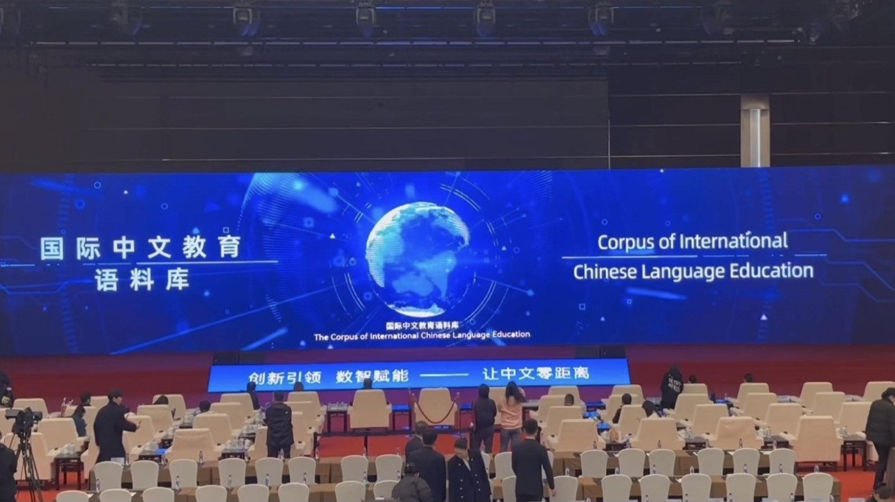
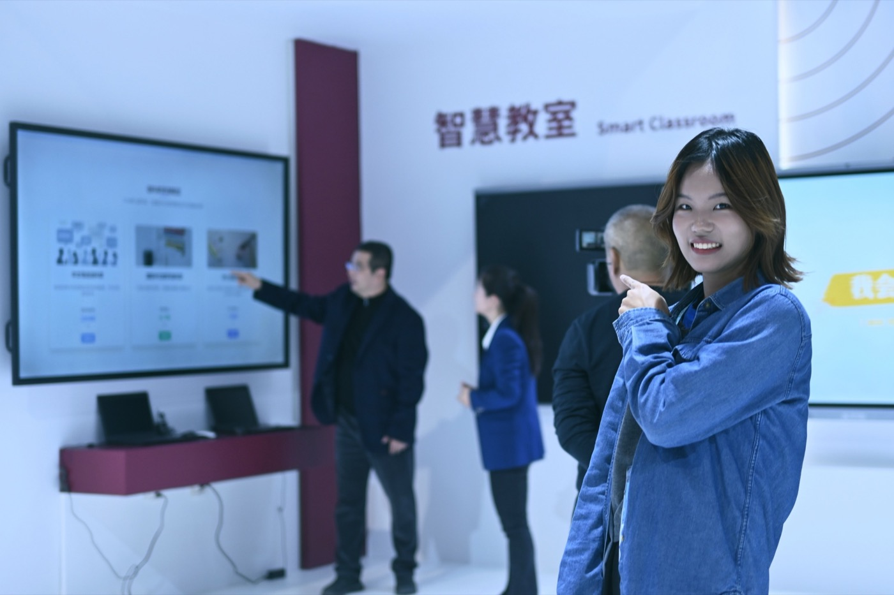
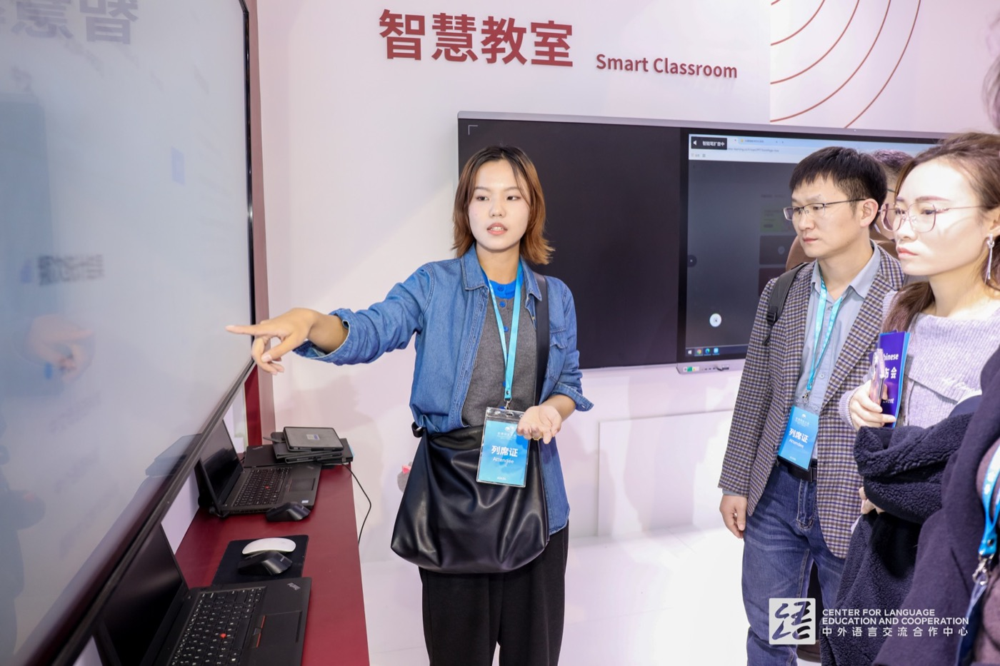
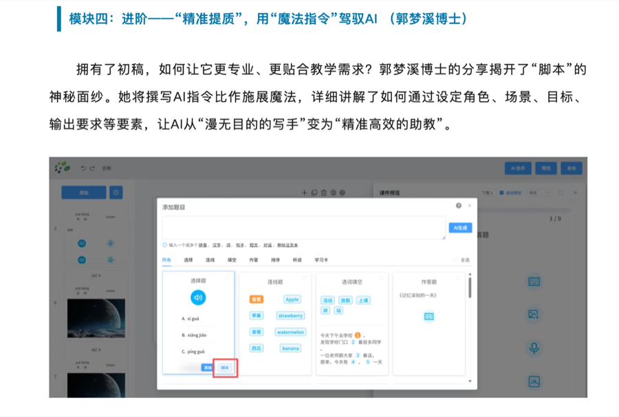

把复杂工具讲清楚
一线教师 AI 实训主讲；长期一对一辅导文科背景学习者。能把工具拆成老师明天就能照着做的步骤。
《看见中国·玉树行动》支教志愿者申请
汉语国际教育本科，语言信息处理硕士，语言智能与技术博士在读。长期参与国际中文智慧教学系统研发，也面向一线教师讲授 AI 辅助备课、提示词设计、习题生成和教学资源改编。
Position fit
一线教师 AI 实训主讲；长期一对一辅导文科背景学习者。能把工具拆成老师明天就能照着做的步骤。
本科汉语国际教育，持高中语文教资；熟悉备课、出题、作业讲解、资源改编等真实教学环节。
组织 8 人标注团队和 CCL24 技术评测任务；具备把复杂项目拆解、推进、验收的经验。
支教结束后可留下 Prompt 模板、备课单、练习生成清单、教学 Skill 和免费工具索引。
先认识 AI，再讨论教学赋能；围绕真实教学任务，不做工具堆砌；每个阶段都有现场操作和课后作业；强调教师审核、学生差异和长期复用。
Course plan
讲清 AI、大模型、多模态模型与能力边界。
梳理备课、资源、课堂、测试、辅导与复盘难点。
训练角色、学段、目标、材料、限制和输出格式。
制作资源包、教案初稿、课件大纲和课堂活动。
设计随堂练习、分层作业、小测和讲评方案。
用表格和 AI 发现成绩变化、知识薄弱点与学生波动。
改造课堂小游戏、动态演示和互动小网页。
寻找、安装、使用适合小学学科的教学 Skill。
老师现场完成一堂课的 AI 教学包，并展示、交流和讨论。
Research & development
全球首个面向国际中文教育的智慧教学系统，通过大语言模型、语音智能、数字人等技术赋能教师备课、融课件制作、互动作业与实时评阅。
Corpus & AI evaluation



教育部中外语言交流合作中心合作项目，主要负责语料库建设，支持多模态查询、深层结构解析与教学应用支撑。
国家自然科学基金项目负责人，制定语义标注规范，组织 8 人团队完成 5000 条语义标注与一万余组语义三元组。
微调 GLM4-9B 用于预标注；以意合图和跨文化场景数据集评测开源及闭源大模型理解能力。
Teaching & training

围绕 AI 融课件制作、提示词设计、教学资源改编、习题生成等内容授课，让教师带走可复用方法。
通过闲鱼接单，为文科背景研究生、博士生提供 AI 辅助科研工具链辅导，积累真实好评。
录制考研专业课系统化网课近 20 节；本科假期在暑期托管中心面向 6-12 岁小学生开展教学。
Why me
把 AI 工具嵌入资源准备、教案设计、课件制作、练习测试、学情分析和个别辅导。
留下备课 Prompt、练习生成清单、教学 Skill、课堂互动模板和工具入口。
根据老师真实难点调整课程，让每位老师至少完成一堂可实际使用的 AI 教学包。
北京语言大学 · 语言智能与技术博士在读
邮箱：guo_mengxi@foxmail.com
电话：17739081031